Mostrar código R
P_3 <- 1/6; P_par <- 3/6; P_mayor_4 <- 2/6
cat("P(3) =", P_3, "\nP(par) =", P_par, "\nP(>4) =", P_mayor_4)P(3) = 0.1666667
P(par) = 0.5
P(>4) = 0.3333333Tema II (Parte I) — Fundamentos de Probabilidad y Variables Aleatorias
Dpto. Estadística e Investigación Operativa, Universidad de Granada
2026-01-01
Grado en Fisioterapia
CC BY 4.0 · Miguel Angel Luque-Fernández
Miguel Angel Luque-Fernández · maluque.netlify.app
Dpto. Estadística e Investigación Operativa · Universidad de Granada
Conexión T01→T02: En el Tema 1 aprendiste a describir una muestra (tablas, gráficos, estadísticos). Ahora damos el salto a modelar la población: necesitamos un lenguaje para cuantificar la incertidumbre y la variabilidad. Ese lenguaje es la probabilidad.
| T01 — Descriptiva | → | T02 — Probabilidad |
|---|---|---|
| Resumir lo observado | → | Modelar lo no observado |
| \(\bar{x}\), \(s\), histograma | → | \(P(A)\), distribuciones, densidad |
| «¿Cómo son mis datos?» | → | «¿Qué modelo siguen mis datos?» |
Tip
Al finalizar este tema sabrás:
pnorm(), pbinom(), ppois() y sus equivalentes BioEstatRTres enfoques complementarios para definir la probabilidad:
| Enfoque | Definición | Fundador(es) | Uso en Fisioterapia |
|---|---|---|---|
| Frecuentista | \(P(A) = \lim_{n\to\infty} n_A/n\) | von Mises, Fisher | Estimar tasas de recuperación poblacionales |
| Axiomática | \(P\) satisface 3 axiomas (Kolmogorov 1933) | Kolmogorov | Base matemática de TODA la estadística |
| Bayesiana | \(P(A \mid B) = \frac{P(B \mid A)P(A)}{P(B)}\) | Bayes, Laplace | Actualizar diagnósticos con evidencia clínica |
Relación entre los tres enfoques: - El enfoque frecuentista define probabilidad como frecuencia relativa a largo plazo → \(P(A) = \lim_{n\to\infty} n_A/n\) - Kolmogorov demostró que esta definición satisface los axiomas de la teoría de la probabilidad → base matemática rigurosa - El enfoque bayesiano usa esos mismos axiomas pero interpreta \(P(A)\) como grado de creencia, actualizable con el Teorema de Bayes
En Fisioterapia: usamos el enfoque frecuentista para estudios poblacionales, el bayesiano para razonamiento clínico, y ambos descansan sobre los axiomas de Kolmogorov.
Cada día tomas decisiones bajo incertidumbre:
La probabilidad te da las herramientas para:
“La estadística es el arte de tomar decisiones en presencia de incertidumbre.” — Stephen Senn
Experimento aleatorio: Proceso que puede repetirse bajo condiciones idénticas, tiene al menos dos resultados posibles, y cuyo resultado no puede predecirse con certeza.
Espacio muestral (\(\Omega\)): Conjunto de todos los resultados posibles.
Evento (\(A\)): Subconjunto del espacio muestral.
Enfoque frecuentista: \[P(A) = \lim_{n \to \infty} \frac{n_A}{n}\]
Regla de Laplace (resultados equiprobables): \[P(A) = \frac{\text{casos favorables}}{\text{casos posibles}}\]
La frecuencia relativa converge a la probabilidad teórica cuando \(n \to \infty\).
Simulación: Aleatorización de pacientes a Fisioterapia Manual (FM) vs Ejercicio Terapéutico (ET).
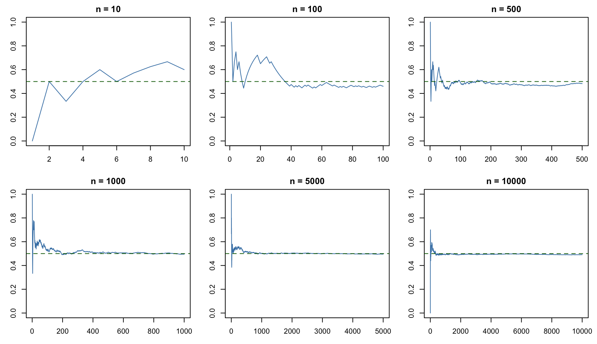
Tip
¿Qué significa esto? Los tres axiomas son el “contrato” mínimo que debe cumplir cualquier probabilidad. Todo lo demás (complemento, unión, Bayes…) se deduce de ellos. No necesitas memorizarlos — solo entender que son la base lógica de todo lo que sigue.
Ejemplo clínico — Diagnósticos excluyentes en consulta de fisioterapia:
| Diagnóstico | Frecuencia | Probabilidad |
|---|---|---|
| Lumbalgia | 40 | 0.40 |
| Cervicalgia | 35 | 0.35 |
| Omalgia | 25 | 0.25 |
| Total | 100 | 1.00 |
\(\sum_i P(A_i) = 0.40 + 0.35 + 0.25 = 1.00\) ✓
Nota
Consecuencias algebraicas de los axiomas
De los tres axiomas se deducen todas las reglas de la probabilidad:
| Regla | Fórmula | Derivación |
|---|---|---|
| Complemento | \(P(\bar{A}) = 1 - P(A)\) | \(A \cup \bar{A} = \Omega\), \(A \cap \bar{A} = \emptyset\) ⇒ \(P(A) + P(\bar{A}) = P(\Omega) = 1\) |
| Probabilidad del vacío | \(P(\emptyset) = 0\) | \(\emptyset = \bar{\Omega}\) ⇒ \(P(\emptyset) = 1 - P(\Omega) = 0\) |
| Cota superior | \(P(A) \leq 1\) | \(P(A) = 1 - P(\bar{A}) \leq 1\) pues \(P(\bar{A}) \geq 0\) |
| Unión general | \(P(A \cup B) = P(A) + P(B) - P(A \cap B)\) | Partición: \(A \cup B = A \cup (B \cap \bar{A})\), con \(A\) y \(B \cap \bar{A}\) excluyentes |
Tip
¿Por qué importa esto? No necesitas memorizar las derivaciones — solo saber que TODO en probabilidad (complemento, unión, Bayes, distribuciones) se deduce lógicamente de estos tres axiomas. Son el “ADN” de la estadística.
En clínica, a menudo es más fácil calcular la probabilidad de que algo NO ocurra. La regla del complemento nos permite obtener una probabilidad a partir de la otra.
\[P(\bar{A}) = 1 - P(A)\]
Ejemplo clínico: El 30% de pacientes en consulta de fisioterapia tienen HTA.
\[P(\text{HTA}) = 0.30 \quad \Rightarrow \quad P(\text{no HTA}) = 1 - 0.30 = 0.70\]
Cuando nos preguntamos por la probabilidad de que ocurra al menos uno de varios eventos clínicos, necesitamos la regla de la suma.
\[P(A \cup B) = P(A) + P(B) - P(A \cap B)\]
Ejemplo clínico — Comorbilidad en 100 pacientes de fisioterapia:
40 con HTA, 30 con Diabetes tipo 2, 10 con ambas condiciones.
par(mar=c(2,2,2,2))
plot(NA, xlim=c(-2.2,2.2), ylim=c(-1.8,1.8), axes=F, xlab="", ylab="",
main="Diagrama de Venn: Comorbilidad HTA y DM")
theta <- seq(0, 2*pi, length=200)
polygon(-0.4+1.3*cos(theta), 1.3*sin(theta), col=rgb(0,0,1,0.2), border="steelblue", lwd=2)
polygon( 0.4+1.3*cos(theta), 1.3*sin(theta), col=rgb(0,0.5,0.3,0.2), border="coral", lwd=2)
text(-1, 0.3, "HTA\n(30 solo)", col="steelblue", font=2, cex=0.9)
text( 1, 0.3, "DM\n(20 solo)", col="darkgreen", font=2, cex=0.9)
text( 0,-0.3, "Ambas\n(10)", font=2, cex=0.9)
text(-2, -1.5, "P(HTA∪DM) = 0.40+0.30-0.10 = 0.60", pos=4, cex=0.85)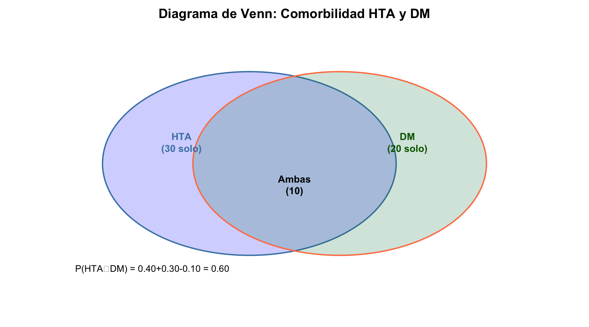
\[P(\text{HTA} \cup \text{DM}) = \frac{40}{100} + \frac{30}{100} - \frac{10}{100} = 0.60\]
par(mfrow=c(1,3), mar=c(2.5, 3, 3.5, 1))
theta <- seq(0, 2*pi, length=400)
# arcos para la lente de intersección
a <- acos(0.35)
ang_r <- seq(pi-a, pi+a, length=200)
ang_l <- seq(-a, a, length=200)
# símbolos ∪ ∩ y fuente Unicode
U <- intToUtf8(8746)
I <- intToUtf8(8745)
par(family = "") # fuente del sistema por defecto
# ── Panel 1: COMPLEMENTO ──
plot(NA, xlim=c(-1.5,1.5), ylim=c(-1.5,1.5), axes=F, xlab="", ylab="",
main=bquote(bold("Complemento:") ~ P(bar(A)) == 1 - P(A)),
cex.main=1.05)
rect(-1.5, -1.5, 1.5, 1.5, col=rgb(0.18,0.53,0.76,0.22), border="#2c3e50", lwd=2.5)
polygon(cos(theta), sin(theta), col="white", border="#2e86c1", lwd=3.5)
text(0, 0, "A", cex=2.5, font=2, col="#2e86c1")
text(1.3, 1.25, expression(bar(A)), cex=1.8, col="#2e86c1", font=2)
text(0, -1.45, "P(Ā) = zona coloreada fuera de A", cex=0.75, col="grey40")
# ── Panel 2: UNIÓN — todo verde (círculos + intersección)
plot(NA, xlim=c(-1.5,1.5), ylim=c(-1.5,1.5), axes=F, xlab="", ylab="",
main=bquote(bold("Union:") ~ P(A * .(U) * B) == P(A) + P(B) - P(A * .(I) * B)),
cex.main=1.05)
polygon(-0.35+cos(theta), sin(theta), col=rgb(0.12,0.52,0.29,0.50), border="#1e8449", lwd=3)
polygon( 0.35+cos(theta), sin(theta), col=rgb(0.12,0.52,0.29,0.50), border="#1e8449", lwd=3)
text(-0.85, 0, "A", cex=2, font=2, col="#1e8449")
text( 0.85, 0, "B", cex=2, font=2, col="#1e8449")
text(0, -1.45, bquote(P(A * .(U) * B) == " toda la zona verde"), cex=0.75, col="grey40")
# ── Panel 3: INTERSECCIÓN ──
plot(NA, xlim=c(-1.5,1.5), ylim=c(-1.5,1.5), axes=F, xlab="", ylab="",
main=bquote(bold("Intersección:") ~ P(A * .(I) * B)),
cex.main=1.05)
polygon(-0.35+cos(theta), sin(theta), col="white", border="#2c3e50", lwd=2.5)
polygon( 0.35+cos(theta), sin(theta), col="white", border="#2c3e50", lwd=2.5)
text(-0.85, 0, "A", cex=2, font=2, col="#2c3e50")
text( 0.85, 0, "B", cex=2, font=2, col="#2c3e50")
polygon(c(0.35+cos(ang_r), -0.35+cos(ang_l)),
c(sin(ang_r), sin(ang_l)),
col=rgb(0.80,0.18,0.15,0.90), border=NA)
text(0, 0.2, bquote(A * .(I) * B), cex=1.4, font=2, col="white")
text(0, -1.45, bquote(P(A * .(I) * B) == " solo zona roja"), cex=0.75, col="grey40")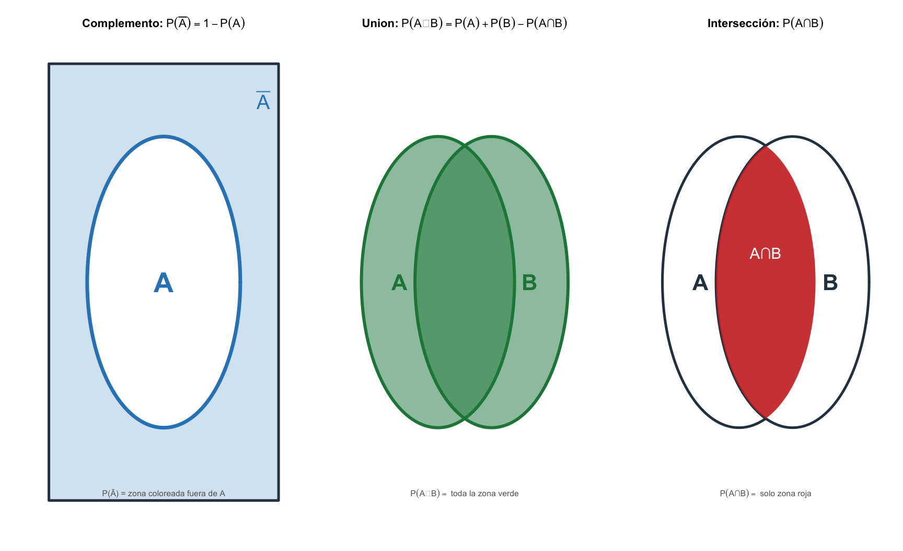
Tip
Para el estudiante: \(\cup\) = unión = O (A o B ocurre, o ambos). \(\cap\) = intersección = Y (A y B ocurren simultáneamente). El complemento \(\bar{A}\) = todo lo que NO es A. En la figura: azul = complemento \(\bar{A}\), verde = unión \(A \cup B\), rojo = intersección \(A \cap B\).
\[P(A \cup B \cup C) = P(A)+P(B)+P(C) - P(A \cap B)-P(A \cap C)-P(B \cap C) + P(A \cap B \cap C)\]
Ejemplo clínico — Tres comorbilidades (n=100 pacientes de fisioterapia):
| Condición | n | Intersecciones | n |
|---|---|---|---|
| HTA (\(A\)) | 40 | \(A \cap B\) | 10 |
| DM (\(B\)) | 30 | \(A \cap C\) | 8 |
| Obesidad (\(C\)) | 20 | \(B \cap C\) | 5 |
| \(A \cap B \cap C\) | 3 |
\[|A \cup B \cup C| = 40 + 30 + 20 - (10 + 8 + 5) + 3 = 90 - 23 + 3 = 70\]
70 de cada 100 pacientes presentan al menos una de las tres condiciones.
Recuperación de lumbalgia según sexo (n=200):
par(mfrow=c(1,2), mar=c(2,3,3,2))
# Panel 1: P(Recuperado | Mujer)
plot(NA, xlim=c(-1.5,1.5), ylim=c(-1.5,1.5), axes=F, xlab="", ylab="",
main="P(Recuperado | Mujer)")
# Espacio muestral: solo mujeres (120)
rect(-1.5,-1.5,1.5,1.5, col=rgb(1,0.7,0.7,0.3), border="pink", lwd=2)
text(0,1.3,"Mujeres (120)",col="darkgreen",font=2,cex=1.1)
# Recuperadas: 72
theta <- seq(0,2*pi,length=200)
polygon(0.6*cos(theta), 0.6*sin(theta), col=rgb(0,0.6,0,0.4), border="darkgreen", lwd=2)
text(0,0,"Recuperadas\n72/120\n= 60%",font=2,cex=1,col="darkgreen")
# Panel 2: P(Recuperado | Hombre)
plot(NA, xlim=c(-1.5,1.5), ylim=c(-1.5,1.5), axes=F, xlab="", ylab="",
main="P(Recuperado | Hombre)")
rect(-1.5,-1.5,1.5,1.5, col=rgb(0.7,0.7,1,0.3), border="steelblue", lwd=2)
text(0,1.3,"Hombres (80)",col="steelblue",font=2,cex=1.1)
polygon(0.6*cos(theta), 0.6*sin(theta), col=rgb(0,0.6,0,0.4), border="darkgreen", lwd=2)
text(0,0,"Recuperados\n32/80\n= 40%",font=2,cex=1,col="darkgreen")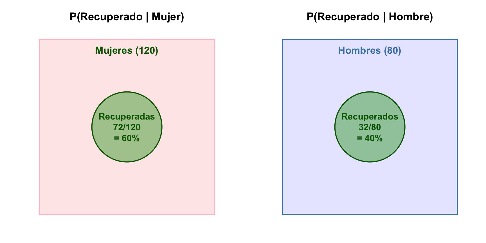
La probabilidad condicional reduce el espacio muestral al subconjunto condicionante.
\[P(A \mid B) = \frac{P(A \cap B)}{P(B)}, \quad P(B) > 0\]
Ejemplo clínico — Recuperación de lumbalgia según sexo (n=200):
| Recuperado (\(R\)) | No recuperado | Total | |
|---|---|---|---|
| Mujer | 72 | 48 | 120 |
| Hombre | 32 | 48 | 80 |
| Total | 104 | 96 | 200 |
\[P(R \mid \text{Mujer}) = \frac{72/200}{120/200} = \frac{72}{120} = 0.60\]
\[P(R \mid \text{Hombre}) = \frac{32/200}{80/200} = \frac{32}{80} = 0.40\]
Cuando dos eventos no se influyen mutuamente, podemos simplificar los cálculos. Pero necesitamos un criterio formal para determinarlo.
\(A\) y \(B\) son independientes si \(P(A \cap B) = P(A) \cdot P(B)\), o equivalentemente si \(P(A \mid B) = P(A)\).
Ejemplo clínico — Ejercicio Terapéutico y Mejoría (n=100):
| Mejoría (\(M\)) | No mejoría | Total | |
|---|---|---|---|
| Ejercicio (\(E\)) | 30 | 20 | 50 |
| Sin ejercicio | 20 | 30 | 50 |
| Total | 50 | 50 | 100 |
\(P(M) = 50/100 = 0.50\) \(P(M \mid E) = 30/50 = 0.60\)
\(P(M \mid E) = 0.60 \neq 0.50 = P(M)\) → NO son independientes. El ejercicio terapéutico está asociado con la mejoría.
El espacio muestral \(\Omega\) se particiona en \(B_1, B_2, B_3\) (excluyentes, \(\cup B_i = \Omega\)). El evento \(A\) se distribuye a través de todas las particiones:
\[P(A) = P(A \mid B_1) \cdot P(B_1) + P(A \mid B_2) \cdot P(B_2) + P(A \mid B_3) \cdot P(B_3)\]
par(mar=c(3, 2, 5, 2), bg="white")
plot(NA, xlim=c(-0.5, 16.5), ylim=c(-0.8, 11), axes=F, xlab="", ylab="",
main="Teorema de la Probabilidad Total — Partición de Ω y Evento A")
# colores verde-azul
col_O_fill <- "#f8fafb"
col_O_bord <- "#1a3a4a"
col_B1_fill <- rgb(0.35, 0.75, 0.55, 0.30) # verde suave
col_B1_bord <- "#1e6e3e"
col_B2_fill <- rgb(0.30, 0.68, 0.75, 0.30) # verde-azulado
col_B2_bord <- "#1a5c6e"
col_B3_fill <- rgb(0.25, 0.50, 0.80, 0.30) # azul medio
col_B3_bord <- "#1a4070"
col_A_fill <- rgb(0.15, 0.35, 0.60, 0.25) # azul profundo semitransparente
col_A_bord <- "#0f2a4a"
col_lbl <- "#0d3b66"
# Ω — rectángulo exterior
xL <- 0.5; xR <- 15.5; yB <- 0.3; yT <- 10.0
rect(xL, yB, xR, yT, col=col_O_fill, border=col_O_bord, lwd=4)
text(1.2, yT - 0.25, expression(Omega), cex=2.0, font=2, col=col_O_bord)
# Particiones (60%, 30%, 10% del ancho de Ω)
w <- xR - xL
b1r <- xL + w * 0.60
b2r <- b1r + w * 0.30
rect(xL, yB, b1r, yT, col=col_B1_fill, border=col_B1_bord, lwd=3)
text(xL + w*0.30, yT - 0.25, expression(B[1]), cex=1.6, col=col_B1_bord, font=2)
text(xL + w*0.30, yT - 0.65, "(Bajo riesgo, 60%)", cex=1.2, col=col_B1_bord)
rect(b1r, yB, b2r, yT, col=col_B2_fill, border=col_B2_bord, lwd=3)
text(b1r + w*0.15, yT - 0.25, expression(B[2]), cex=1.6, col=col_B2_bord, font=2)
text(b1r + w*0.15, yT - 0.65, "(Moderado, 30%)", cex=1.2, col=col_B2_bord)
rect(b2r, yB, xR, yT, col=col_B3_fill, border=col_B3_bord, lwd=3)
text(b2r + w*0.05, yT - 0.25, expression(B[3]), cex=1.5, col=col_B3_bord, font=2)
text(b2r + w*0.05, yT - 0.65, "(Alto, 10%)", cex=1.1, col=col_B3_bord)
# Evento A — elipse dentro de Ω que cubre las 3 particiones
theta <- seq(0, 2*pi, length=300)
cx <- (xL + xR) / 2; cy <- (yB + yT) / 2
rx <- w * 0.47; ry <- (yT - yB) * 0.43
x_ell <- cx + rx*cos(theta)
y_ell <- cy + ry*sin(theta)
polygon(x_ell, y_ell, col=col_A_fill, border=col_A_bord, lwd=4)
text(cx, cy, "Evento A\n(Recuperación)", cex=1.3, col=col_A_bord, font=2)
# Etiquetas: intersecciones y probabilidades condicionadas
text(xL + w*0.30, cy + 0.9, expression(A * " ∩ " * B[1] * ":"), cex=1.25, col=col_A_bord, font=2)
text(xL + w*0.30, cy - 0.6, expression(P(A * "|" * B[1]) == 0.90), cex=1.2, col=col_lbl)
text(b1r + w*0.15, cy + 0.9, expression(A * " ∩ " * B[2] * ":"), cex=1.25, col=col_A_bord, font=2)
text(b1r + w*0.15, cy - 0.6, expression(P(A * "|" * B[2]) == 0.70), cex=1.2, col=col_lbl)
text(b2r + w*0.05, cy + 0.9, expression(A * " ∩ " * B[3] * ":"), cex=1.15, col=col_A_bord, font=2)
text(b2r + w*0.05, cy - 0.6, expression(P(A * "|" * B[3]) == 0.40), cex=1.15, col=col_lbl)
# Fórmula de probabilidad total (debajo de Ω)
text((xL + xR)/2, yB - 0.35,
expression(P(A) == P(A * "|" * B[1]) * " · " * P(B[1]) ~+~
P(A * "|" * B[2]) * " · " * P(B[2]) ~+~
P(A * "|" * B[3]) * " · " * P(B[3])),
cex=1.4, col=col_A_bord, font=2)
text((xL + xR)/2, yB - 0.8,
"P(Recuperación) = 0.90 × 0.60 + 0.70 × 0.30 + 0.40 × 0.10 = 0.79",
cex=1.25, font=2, col=col_A_bord)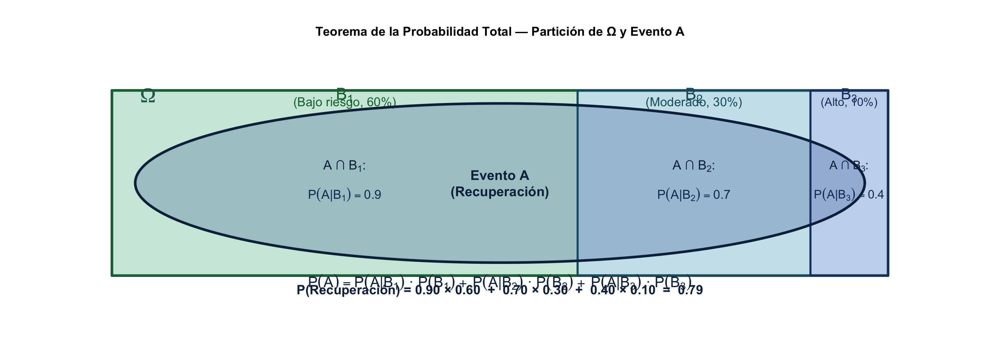
Contexto clínico: Tres grupos de riesgo en rehabilitación de lumbalgia:
| Grupo de riesgo | \(P(B_i)\) | \(P(R \mid B_i)\) | Aporte \(P(R \mid B_i) \cdot P(B_i)\) |
|---|---|---|---|
| Bajo (sin comorbilidades) | 0.60 | 0.90 | 0.54 |
| Moderado (una comorbilidad) | 0.30 | 0.70 | 0.21 |
| Alto (múltiples comorbilidades) | 0.10 | 0.40 | 0.04 |
| Total | 1.00 | \(P(R) = 0.79\) |
aporte <- c(0.54, 0.21, 0.04)
names(aporte) <- c("Bajo\n(0.60×0.90)", "Moderado\n(0.30×0.70)", "Alto\n(0.10×0.40)")
bp <- barplot(aporte, col=c("darkgreen","gold","coral"),
main="Aportes a P(Recuperación) = 0.79",
ylab="Probabilidad", ylim=c(0,0.6))
text(bp, aporte+0.02, aporte, font=2, cex=1.2)
abline(h=0.79, col="steelblue", lwd=2, lty=2)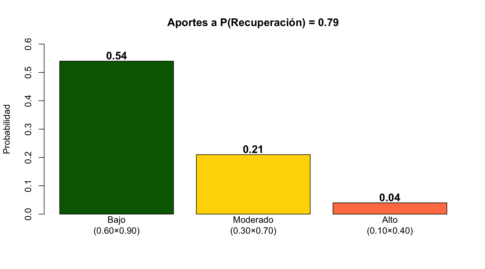
Importante
Si \(B_1, B_2, \ldots, B_k\) son mutuamente excluyentes y cubren todo el espacio muestral (\(\cup_i B_i = \Omega\)), entonces para cualquier evento \(A\):
\[P(A) = \sum_{i=1}^{k} P(A \mid B_i) \cdot P(B_i)\]
La probabilidad total es la suma ponderada de las probabilidades condicionadas a cada estrato, usando como pesos las proporciones de cada estrato en la población.
Importante
Permite actualizar la probabilidad de una hipótesis \(A\) con nueva evidencia \(B\):
\[P(A \mid B) = \frac{P(B \mid A) \cdot P(A)}{P(B)}\]
Usando Probabilidad Total en el denominador:
\[P(A \mid B) = \frac{P(B \mid A) \cdot P(A)}{P(B \mid A) \cdot P(A) + P(B \mid NoA) \cdot P(NoA)}\]
Enunciado: Prevalencia de enfermedad \(P(D)=0.01\) (1%). Test con sensibilidad \(P(+ \mid D)=0.99\) (99%) y especificidad \(P(- \mid NoD)=0.95\) (95%).
Si una persona da positivo, ¿probabilidad de que tenga la enfermedad?
Paso 1 — Probabilidad total de dar positivo:
\[P(+) = P(+ \mid D) \cdot P(D) + P(+ \mid NoD) \cdot P(NoD)\] \[P(+) = 0.99 \times 0.01 + 0.05 \times 0.99 = 0.0099 + 0.0495 = 0.0594\]
Paso 2 — Aplicar Bayes:
\[P(D \mid +) = \frac{P(+ \mid D) \cdot P(D)}{P(+)} = \frac{0.99 \times 0.01}{0.0594} = \frac{0.0099}{0.0594} = 0.1667\]
P_D <- 0.01; P_NoD <- 0.99
P_Pos_given_D <- 0.99; P_Pos_given_NoD <- 0.05
P_Pos <- (P_Pos_given_D * P_D) + (P_Pos_given_NoD * P_NoD)
P_D_given_Pos <- (P_Pos_given_D * P_D) / P_Pos
cat("P(+) =", round(P_Pos, 4),
"\nP(D | +) =", round(P_D_given_Pos, 4),
"\n→ Solo el 16.7% de los positivos tienen la enfermedad")P(+) = 0.0594
P(D | +) = 0.1667
→ Solo el 16.7% de los positivos tienen la enfermedad# Visualización: matriz de confusión
par(mfrow=c(1,2), mar=c(4,4,3,1))
# Panel 1: Barras de composición del test
vp <- P_Pos_given_D * P_D; fp <- P_Pos_given_NoD * P_NoD
vn <- (1-P_Pos_given_NoD) * P_NoD; fn <- (1-P_Pos_given_D) * P_D
m <- matrix(c(vp, fp, vn, fn), 2, dimnames=list(
c("D+ (Enfermo)","D- (Sano)"), c("Test +","Test -")))
barplot(m, beside=TRUE, col=c("coral","steelblue"),
main=paste0("VPP=", round(vp/(vp+fp)*100,1), "% VPN=", round(vn/(vn+fn)*100,1), "%"),
ylab="Probabilidad", ylim=c(0,0.9))
legend("topright", c("Enfermo","Sano"), fill=c("coral","steelblue"), bty="n", cex=0.8)
# Panel 2: Árbol simplificado
plot(NA, xlim=c(0,10), ylim=c(0,10), axes=F, xlab="", ylab="",
main="Árbol de decisión diagnóstica")
text(5, 9.5, "Paciente", font=2, cex=1.2)
arrows(5, 9, 2.5, 7, lwd=2, col="coral")
arrows(5, 9, 7.5, 7, lwd=2, col="steelblue")
text(2.5, 8, paste0("D+ (", P_D*100, "%)"), col="coral", font=2)
text(7.5, 8, paste0("D- (", P_NoD*100, "%)"), col="steelblue", font=2)
rect(1, 3, 4, 6, col=rgb(1,0,0,0.1), border="coral")
text(2.5, 4.5, paste0("VPP\n", round(vp/(vp+fp)*100,1), "%"), font=2, cex=0.8)
rect(6, 3, 9, 6, col=rgb(0,0,1,0.1), border="steelblue")
text(7.5, 4.5, paste0("VPN\n", round(vn/(vn+fn)*100,1), "%"), font=2, cex=0.8)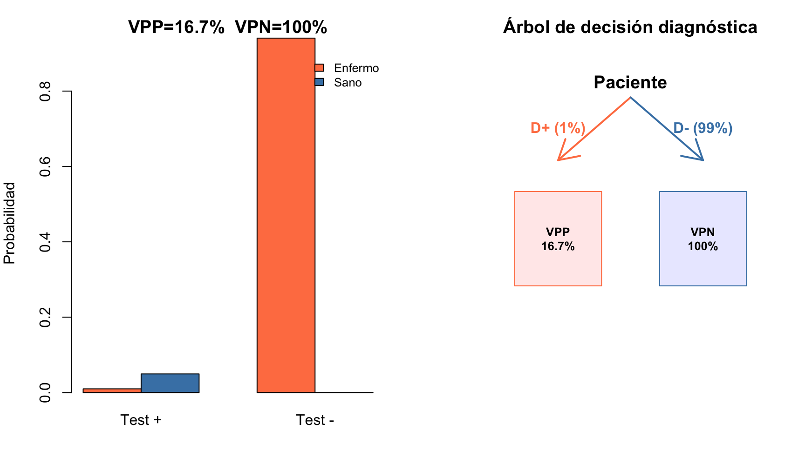
Advertencia
A pesar de la alta sensibilidad (99%), el VPP es solo 16.7% porque la baja prevalencia (1%) hace que los falsos positivos dominen: \(P(+ \mid NoD) \times P(NoD) = 0.0495\) > \(P(+ \mid D) \times P(D) = 0.0099\).
Si P(Recuperado | Mujer) = 60% y P(Recuperado | Hombre) = 40%, ¿significa esto que el sexo causa la diferencia en recuperación? ¿Qué otra explicación podría haber?
En el ejemplo, P(M | E) = 0.60 y P(M) = 0.50. ¿Qué necesitarías cambiar en la tabla para que Ejercicio y Mejoría fueran independientes?
Thomas Bayes (1701–1761)
Pierre-Simon Laplace (1749–1827)
Nota
Ironía histórica: Bayes nunca publicó su teorema en vida. Hoy lleva su nombre una rama entera de la estadística que él nunca imaginó.
Tip
Dato clave: Laplace aplicó el teorema de Bayes para estimar la masa de Saturno y la población de Francia, mostrando que la inferencia probabilística inversa funciona tanto para el cosmos como para los censos.
Importante
El teorema de Bayes es la piedra angular de la estadística bayesiana: un paradigma donde la probabilidad representa grado de creencia (incertidumbre subjetiva), y no solo frecuencia a largo plazo.
El flujo bayesiano:
\[\underbrace{P(\theta)}_{\text{Distribución a priori}} \;\; \times \;\; \underbrace{P(\text{datos} \mid \theta)}_{\text{Verosimilitud}} \;\; \propto \;\; \underbrace{P(\theta \mid \text{datos})}_{\text{Distribución a posteriori}}\]
| Concepto | Enfoque Frecuentista | Enfoque Bayesiano |
|---|---|---|
| Parámetro \(\theta\) | Fijo, desconocido | Variable aleatoria |
| Probabilidad | Frecuencia a largo plazo | Grado de creencia |
| Inferencia | Estimadores, IC, p-valores | Distribución a posteriori, intervalos creíbles |
| Información previa | No se incorpora formalmente | Se modela explícitamente con la priori |
| Interpretación IC | “El 95% de los IC contienen \(\theta\)” | “Hay 95% de probabilidad de que \(\theta\) esté en el intervalo” |
En Fisioterapia: La estadística bayesiana permite actualizar probabilidades diagnósticas con cada nueva prueba o signo clínico — el razonamiento clínico es inherentemente bayesiano.
El test tiene 99% de sensibilidad pero el VPP es solo 16.7%. ¿Qué cambiaría si la prevalencia fuera del 10% en lugar del 1%?
Conexión: Hasta ahora hemos cuantificado la incertidumbre de eventos clínicos mediante reglas de probabilidad. Las variables aleatorias nos permiten modelizar esa incertidumbre matemáticamente, asignando números a los resultados y describiendo su distribución.
Fisioterapeuta evaluando a un paciente
Cada paciente es único. La probabilidad nos da el lenguaje para cuantificar la incertidumbre clínica y tomar decisiones informadas.
Hasta aquí hemos modelado eventos (A, B, intersecciones, condicionales). Ahora damos el salto a modelar variables: magnitudes clínicas que varían de paciente a paciente. Una variable aleatoria asigna un número a cada resultado incierto.
| En T01 (Descriptiva) | En T02 (Probabilidad) |
|---|---|
| \(\bar{x}\) — media muestral | \(\mu = E(X)\) — esperanza poblacional |
| \(s^2\) — varianza muestral | \(\sigma^2 = \Var(X)\) — varianza poblacional |
| \(s\) — desviación típica muestral | \(\sigma = \SD(X)\) — desviación típica poblacional |
| \(\hat{p}\) — proporción muestral | \(p = P(X \in A)\) — probabilidad poblacional |
| Describías tu muestra | Modelas la población |
Para modelar matemáticamente la incertidumbre clínica, necesitamos asignar valores numéricos a los resultados inciertos: esto es una variable aleatoria.
Nota
Una variable aleatoria (VA) es una función que asigna un valor numérico a cada resultado de un experimento aleatorio.
Tipos de variables aleatorias:
| Tipo | Descripción | Ejemplo en Fisioterapia |
|---|---|---|
| Discreta | Toma valores aislados (contables) | Nº de sesiones hasta mejoría |
| Continua | Toma cualquier valor en un intervalo | Rango de movimiento (grados) |
Función de probabilidad / densidad: Describe el comportamiento probabilístico de la VA. Para discretas usamos la función de masa \(P(X=x)\). Para continuas, la función de densidad \(f(x)\) donde el área bajo la curva entre \(a\) y \(b\) es \(P(a \leq X \leq b)\).
Nota
f.m.p.: \(P(X = x) = f(x)\) asigna una probabilidad a cada valor posible de una VA discreta.
Propiedades: (1) \(P(X = x) \geq 0\) para todo \(x\); (2) \(\sum_x P(X = x) = 1\)
Ejemplo clínico: \(X\) = nº de pacientes con mejoría en 3 tratados (\(p=0.5\))
| \(x\) | 0 | 1 | 2 | 3 |
|---|---|---|---|---|
| \(P(X=x)\) | 1/8 = 0.125 | 3/8 = 0.375 | 3/8 = 0.375 | 1/8 = 0.125 |
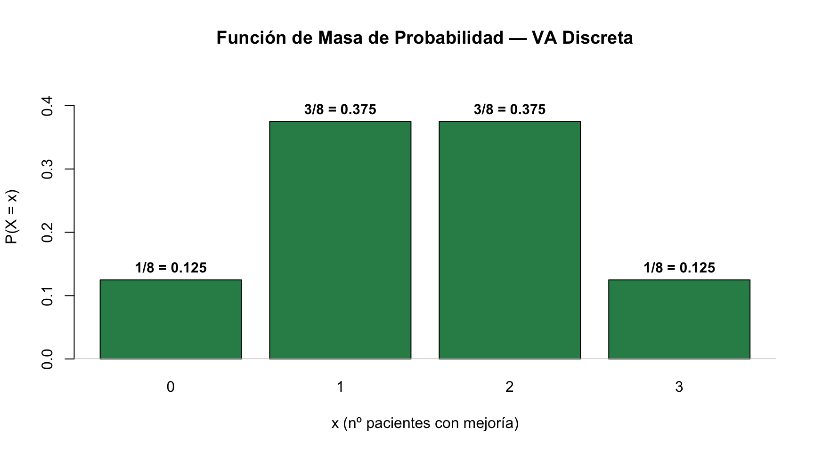
Verificación: \(\sum P(X=x) = 0.125+0.375+0.375+0.125 = 1.00\) ✓
Nota
\[E(X) = \sum_i x_i \cdot P(X = x_i)\]
La esperanza es el valor esperado o media poblacional de la VA.
Ejemplo (mejoría en 3 pacientes):
| \(x_i\) | \(P(X=x_i)\) | \(x_i \cdot P(X=x_i)\) |
|---|---|---|
| 0 | 1/8 | \(0 \times 1/8 = 0\) |
| 1 | 3/8 | \(1 \times 3/8 = 3/8\) |
| 2 | 3/8 | \(2 \times 3/8 = 6/8\) |
| 3 | 1/8 | \(3 \times 1/8 = 3/8\) |
\[E(X) = 0 + \frac{3}{8} + \frac{6}{8} + \frac{3}{8} = \frac{12}{8} = 1.5\]
Interpretación: En promedio se espera que 1.5 de cada 3 pacientes muestren mejoría.
Nota
\[\text{Var}(X) = E[(X - \mu)^2] = \sum_i (x_i - \mu)^2 \cdot P(X=x_i)\]
Fórmula alternativa: \(\text{Var}(X) = E(X^2) - [E(X)]^2\)
Ejemplo (mejoría, \(\mu = 1.5\)):
| \(x_i\) | \(P(X=x_i)\) | \((x_i - 1.5)^2\) | \((x_i-1.5)^2 \cdot P(X=x_i)\) |
|---|---|---|---|
| 0 | 1/8 | 2.25 | 2.25 × 1/8 = 0.281 |
| 1 | 3/8 | 0.25 | 0.25 × 3/8 = 0.094 |
| 2 | 3/8 | 0.25 | 0.25 × 3/8 = 0.094 |
| 3 | 1/8 | 2.25 | 2.25 × 1/8 = 0.281 |
\[\text{Var}(X) = 0.281+0.094+0.094+0.281 = 0.75\]
Nota
\[F(x) = P(X \leq x)\]
La f.d.a. acumula la probabilidad desde \(-\infty\) hasta \(x\). Es no decreciente, \(\lim_{x\to-\infty}F(x)=0\), \(\lim_{x\to\infty}F(x)=1\), y \(P(a < X \leq b) = F(b) - F(a)\).
mu <- 30; sigma <- 8
curve(pnorm(x, mu, sigma), mu-24, mu+24, lwd=3, col="steelblue",
main=expression(paste("f.d.a. Normal: F(x) = P(X ≤ x), N(30,", 8^2, ")")),
xlab="Fuerza de prensión (kg)", ylab="F(x)")
abline(h=c(0,0.5,1), lty=3, col="grey"); abline(v=mu, lty=2, col="darkgreen")
# Marcar F(22)
arrows(22, 0, 22, pnorm(22, mu, sigma), col="darkgreen", lwd=2, length=0.1)
points(22, pnorm(22, mu, sigma), pch=19, col="darkgreen", cex=1.5)
text(22, pnorm(22,mu,sigma)+0.05, paste0("F(22) = ", round(pnorm(22,mu,sigma),3)), col="darkgreen", font=2)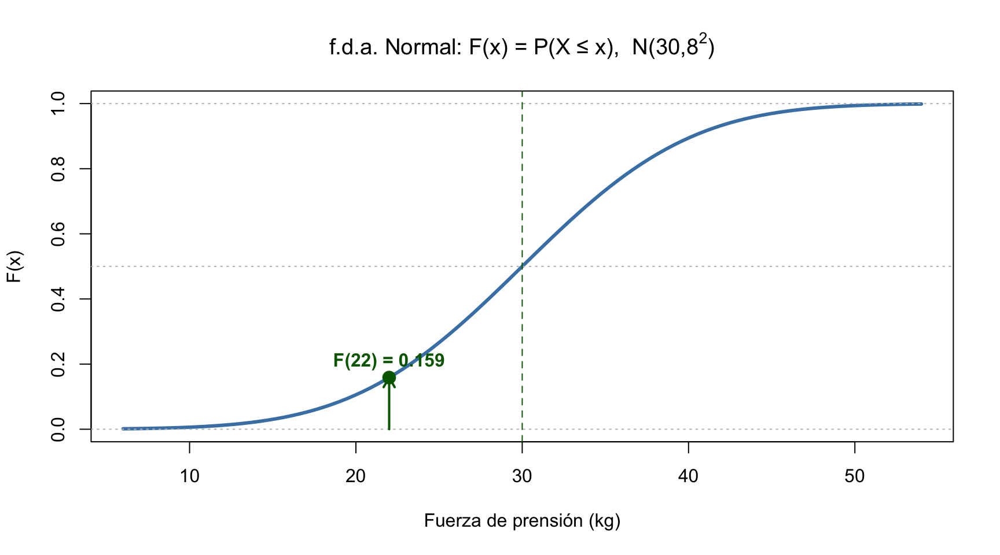
\[F(22) = P(X \leq 22) = \Phi\left(\frac{22-30}{8}\right) = \Phi(-1) = 0.159\]
par(mfrow=c(1,2), mar=c(4,4,3,1))
# DISCRETA: Binomial(10, 0.4) — funcion escalonada
x_d <- 0:10; Fx_d <- pbinom(x_d, 10, 0.4)
plot(x_d, Fx_d, type="s", lwd=3, col="steelblue",
main="f.d.a. Discreta — Binomial(10,0.4)",
xlab="x", ylab="F(x)", ylim=c(0,1), xlim=c(-0.5,10.5))
abline(h=c(0,0.5,1), lty=3, col="grey"); points(x_d, Fx_d, pch=19, col="steelblue", cex=1.2)
# CONTINUA: Normal(0,1) — función continua
curve(pnorm(x), -4, 4, lwd=3, col="seagreen",
main="f.d.a. Continua — Normal(0,1)",
xlab="x", ylab="F(x)", ylim=c(0,1))
abline(h=c(0,0.5,1), lty=3, col="grey"); abline(v=0, lty=3, col="grey")
points(0, 0.5, pch=19, col="darkgreen", cex=1.5)VA Discreta: \(F(x) = \sum_{x_i \leq x} P(X=x_i)\) → función escalonada, salta en cada valor posible
VA Continua: \(F(x) = \int_{-\infty}^x f(t)dt\) → función continua suave, sin saltos
Nota
\[P(a \leq X \leq b) = \text{área bajo } f(x) \text{ entre } a \text{ y } b\]
La probabilidad es el área bajo la curva de la función de densidad \(f(x)\).
Propiedades: (1) \(f(x) \geq 0\); (2) área total bajo \(f(x)\) = 1; (3) \(P(X=c) = 0\) para cualquier \(c\)
Tip
Notación: El símbolo \(\int_a^b f(x)dx\) significa “área bajo la curva \(f(x)\) entre \(a\) y \(b\)”. En este curso siempre usaremos R (pnorm, dnorm, pt, pchisq) en lugar de calcular integrales a mano.
set.seed(123)
ROM <- rnorm(500, mean=150, sd=20)
hist(ROM, col="steelblue", border="white", breaks=25, freq=FALSE,
main="f.d.p. — ROM de Hombro (n=500)",
xlab="Grados de flexión", ylab="Densidad de probabilidad f(x)", cex.lab=1.1)
curve(dnorm(x, 150, 20), add=TRUE, col="darkgreen", lwd=3)
# Sombrear P(130 ≤ X ≤ 170)
xr <- seq(130, 170, 0.5); yr <- dnorm(xr, 150, 20)
polygon(c(xr, rev(xr)), c(yr, rep(0,length(yr))), col=rgb(0,0.5,0.3,0.25), border=NA)
text(150, 0.003, paste("P(130≤X≤170) =",
round(pnorm(170,150,20)-pnorm(130,150,20),3)), font=2, cex=1.1, col="darkgreen")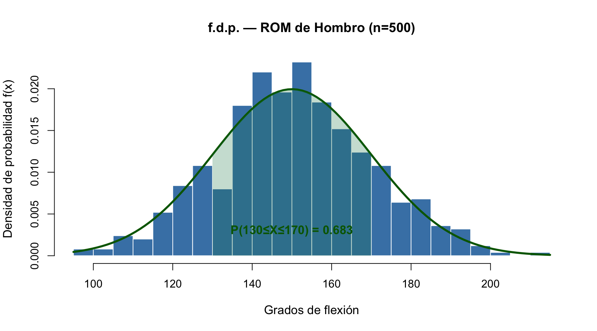
Nota
\[E(X) = \int_{-\infty}^{\infty} x \cdot f(x)\,dx \qquad \text{Var}(X) = \int_{-\infty}^{\infty} (x-\mu)^2 \cdot f(x)\,dx\]
Ejemplo — ROM de hombro (\(\mu=150\), \(\sigma=20\)):
E(X) teórica = 150° E(X) simulada = 150 °
Var(X) teórica = 400 Var(X) simulada = 398.9
σ teórica = 20° σ simulada = 20 °# Comparación de dos VA continuas con distinta dispersión
curve(dnorm(x, 150, 10), 110, 190, col="steelblue", lwd=3,
main=expression(paste("Dos VA Normales: misma ", mu, ", distinta ", sigma)),
xlab="Grados ROM", ylab="f(x)", cex.lab=1.1)
curve(dnorm(x, 150, 25), 110, 190, col="seagreen", lwd=3, add=TRUE)
abline(v=150, lty=2, col="grey")
legend("topright", c(expression(sigma==10), expression(sigma==25)),
col=c("steelblue","seagreen"), lwd=3, bty="n", cex=1.2)
text(150, 0.04, expression(mu==150), pos=1, cex=1.1)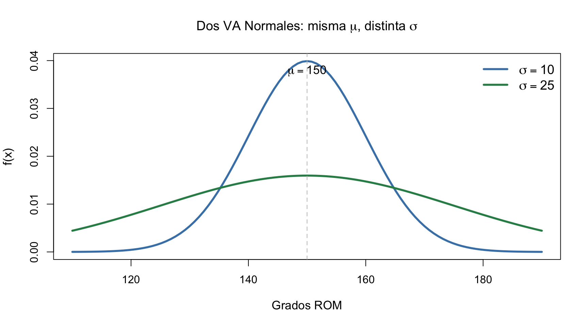
Interpretación: Ambas tienen la misma esperanza (\(\mu=150°\)), pero la distribución naranja (\(\sigma=25\)) tiene mayor dispersión que la azul (\(\sigma=10\)).
| Concepto | VA Discreta | VA Continua |
|---|---|---|
| Función de probabilidad | f.m.p.: \(P(X=x)\) | f.d.p.: \(f(x)\) |
| Probabilidad en intervalo | \(\sum_{x \in [a,b]} P(X=x)\) | \(\int_a^b f(x)\,dx\) |
| Probabilidad puntual | \(P(X=x) \geq 0\) | \(P(X=x) = 0\) |
| f.d.a. | \(F(x) = \sum_{x_i \leq x} P(X=x_i)\) | \(F(x) = \int_{-\infty}^x f(t)\,dt\) |
| Normalización | \(\sum_x P(X=x) = 1\) | \(\int_{-\infty}^{\infty} f(x)\,dx = 1\) |
| Esperanza \(E(X)\) | \(\sum x_i \cdot P(X=x_i)\) | \(\int x \cdot f(x)\,dx\) |
| Varianza \(\text{Var}(X)\) | \(\sum (x_i-\mu)^2 \cdot P(X=x_i)\) | \(\int (x-\mu)^2 \cdot f(x)\,dx\) |
par(mfrow=c(1,2), mar=c(4,4,3,1))
# Discreta: Binomial
x <- 0:10
plot(x, dbinom(x,10,0.5), type="h", lwd=4, col="steelblue",
main="VA Discreta: Binomial(10,0.5)", xlab="x", ylab="P(X=x)")
# Continua: Normal
curve(dnorm(x), -4, 4, lwd=3, col="seagreen",
main="VA Continua: Normal(0,1)", xlab="x", ylab="f(x)")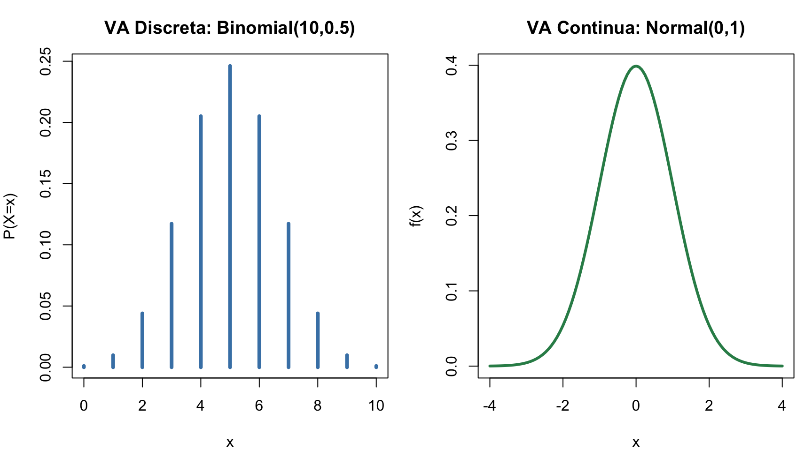
| Prefijo | Función | Fórmula | Ejemplo (Normal) |
|---|---|---|---|
d |
Densidad/Masa | \(f(x)\) | dnorm(x, mean, sd) |
p |
Distribución acumulada | \(F(x) = P(X \leq x)\) | pnorm(q, mean, sd) |
q |
Cuantil (percentil) | \(F^{-1}(p)\) | qnorm(p, mean, sd) |
r |
Aleatorio | Genera \(n\) valores | rnorm(n, mean, sd) |
Tip
Este patrón se repite para todas las distribuciones: dbinom, pbinom, qbinom, rbinom; dpois, ppois, qpois, rpois, etc.
Contexto: El 15% de pacientes en consulta tienen lumbalgia crónica. Un test tiene sensibilidad 90% y especificidad 85%.
Tip
Solución
prev <- 0.15; sens <- 0.90; spec <- 0.85
vpp <- (sens*prev) / (sens*prev + (1-spec)*(1-prev))
vpn <- (spec*(1-prev)) / (spec*(1-prev)+(1-sens)*prev)
# Visualización
par(mfrow=c(1,2), mar=c(4,4,3,1))
# Panel 1: Árbol de probabilidades
labels <- c("Enfermo\n(15%)", "Sano\n(85%)")
bp <- barplot(c(prev, 1-prev), names=labels, col=c("coral","steelblue"),
main="Prevalencia de lumbalgia", ylab="Proporción", ylim=c(0,1))
text(bp, c(prev,1-prev)+0.05, paste0(round(c(prev,1-prev)*100,1),"%"), font=2, cex=1.2)
# Panel 2: Rendimiento del test
vp <- sens*prev; fp <- (1-spec)*(1-prev); vn <- spec*(1-prev); fn <- (1-sens)*prev
m <- matrix(c(vp, fn, fp, vn), 2, dimnames=list(c("Positivo","Negativo"), c("Enfermo","Sano")))
barplot(m, beside=TRUE, col=c("coral","steelblue"),
main=paste0("Test: VPP=", round(vpp*100,1), "% VPN=", round(vpn*100,1), "%"),
ylab="Probabilidad", ylim=c(0,0.8))
legend("topright", c("Positivo","Negativo"), fill=c("coral","steelblue"), bty="n", cex=0.85)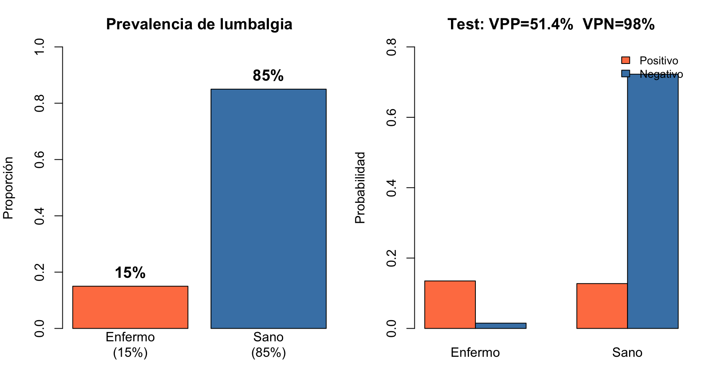
VPP = 51.4 %
VPN = 98 %# Probabilidad condicional
P_R_given_M <- 72/120 # P(Recuperado | Mujer) = 0.60
P_R_given_H <- 32/80 # P(Recuperado | Hombre) = 0.40
# Teorema de Bayes — Test diagnóstico
prev <- 0.15 # Prevalencia
sens <- 0.90 # Sensibilidad
spec <- 0.85 # Especificidad
vpp <- (sens * prev) / (sens * prev + (1 - spec) * (1 - prev))
vpn <- (spec * (1 - prev)) / (spec * (1 - prev) + (1 - sens) * prev)
cat("VPP =", round(vpp * 100, 1), "%")
cat("VPN =", round(vpn * 100, 1), "%")# VA Discreta — Binomial
x <- 0:3
px <- dbinom(x, 3, 0.5) # P(X = x)
Ex <- sum(x * px) # Esperanza
Varx <- sum((x - Ex)^2 * px) # Varianza
# VA Continua — Normal
mu <- 30; sigma <- 8; x_obs <- 22
z <- (x_obs - mu) / sigma # Z-score
p_bajo <- pnorm(x_obs, mu, sigma) # P(X ≤ 22)
# Las 4 funciones de R para distribuciones
dnorm(x, mu, sigma) # Densidad f(x)
pnorm(q, mu, sigma) # Distribución F(q) = P(X ≤ q)
qnorm(p, mu, sigma) # Cuantil
rnorm(n, mu, sigma) # Generar n valores aleatorios
Bioestadística · Grado en Fisioterapia · UGR